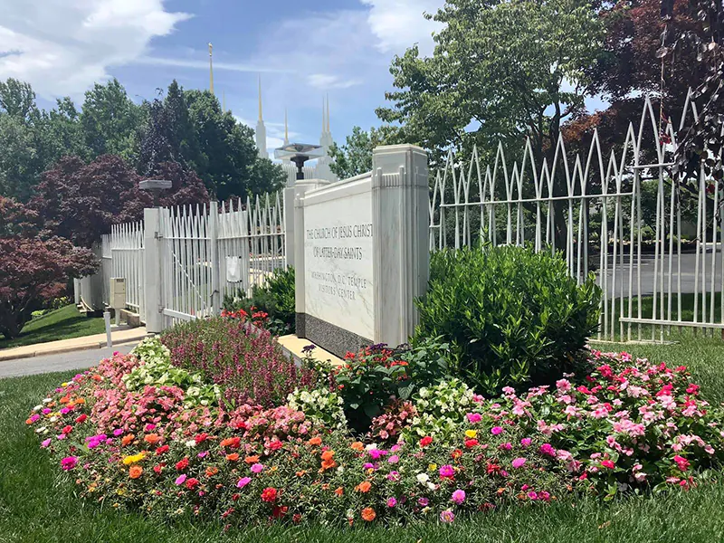

Washington D.C. Temple
Temple Locale
Standing on sprawling grounds about 10 miles north of the United States Capitol, the gold-spired Washington D.C. Temple is a well-known landmark along the Capital Beltway in Kensington, Maryland. The beauty of this soaring edifice is enhanced by a reflection pond near the visitors' center and a spouting water feature at the temple entrance. Sharing the 52-acre wooded site are the Washington D.C. Stake Center and the beautiful Washington D.C. Temple Visitors' Center, which hosts numerous interactive exhibits, a breathtaking reproduction of the Christus statue, and regular lectures and concerts throughout the year. Admission is free. At Christmastime, the grounds are set aglow during the Festival of Lights, which offers nightly concerts, a live nativity scene, and international nativity sets.
Open House and Dedication
The open house, youth devotional and rededication of the Washington D.C. Temple of The Church of Jesus Christ of Latter-day Saints (originally scheduled for 2020 but delayed because of COVID-19) has been rescheduled for 2022. The news was made on Tuesday, July 20, 2021, in a letter from the First Presidency and shared during a media event at the Washington D.C. Temple Visitors’ Center. A media day for the renovated temple will take place on April 18, 2022, followed by private tours for invited guests from April 19 to April 27. A public open house will then begin on April 28 and continue daily (except for Sundays) into the summer. Open house ticket information is available at dctemple.org. The youth devotional will be held on August 13, followed by the temple rededication on August 14 in three sessions. The youth devotional and rededication will be broadcast for all congregations within the Washington D. C. Temple district.
Temple Renovation
On March 3, 2018, the Washington D.C. Temple closed for an extensive renovation project. The temple's mechanical and electrical systems will be upgraded, and all finishes and furnishings will be refreshed. A minor addition to the exterior will house stairs and a new elevator system. Changes will also be made to the grounds. The temple is anticipated to reopen in 2021, following a public open house and rededication ceremony. The visitors' center will remain open during the entire renovation, and the annual Festival of Lights will still go on display in December.